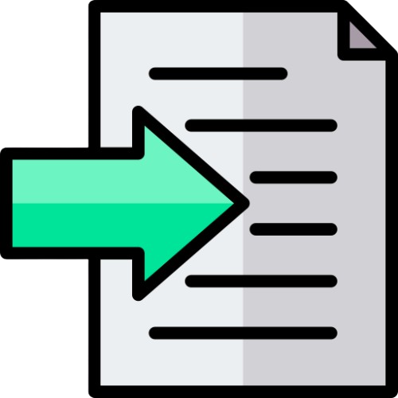

Getting Started with Neumes
The application is divided into 3 main segments.
First is the button dashboard in the header, the functions of the buttons are explained in the next section.
Second is the Virtual Paper: A standard A4 paper with measures of 210 x 297 millimeters, and margin of, which makes it suitable for printing (note: Printer setting needs to be on A4 paper, not letter which is the default in many cases).
Third are the various note buttons that appear when some of the buttons on the button dashboard are clicked.
Dashboard Buttons
This button deletes everything on the paper and initializes a new blank Virtual Page, to start writing again.
 The Virtual Page is converted into PDF and can be saved to the computer. This can later be printed on standard A4 Paper. Additionally, the HTML contents of the Virtual Paper are storred in the PDFs Metadata.
The Virtual Page is converted into PDF and can be saved to the computer. This can later be printed on standard A4 Paper. Additionally, the HTML contents of the Virtual Paper are storred in the PDFs Metadata.
 This function gets all the HTML code that has populated the Virtual Page and exports it. It is useful if it is needed to store a part of the document, to be imported a later time. Also, it is useful if it is needed to do small custom changes in positioning or content - anyone with knowledge of html and css can do edits to the paper content.
This function gets all the HTML code that has populated the Virtual Page and exports it. It is useful if it is needed to store a part of the document, to be imported a later time. Also, it is useful if it is needed to do small custom changes in positioning or content - anyone with knowledge of html and css can do edits to the paper content.

Opens a textbox where the contents of an Exported file can be entered. Upon clicking “BUTTON NAME" the content of the import textbox will be added to the paper, replacing the previous text. By clicking browse a revioulsy exported PDF can be imported. This will populate the Virtual Page with the HTML metadata previously exported. Note, this only works with chants created using this application.
 This deletes/removes the last entered note. Can also be done by pressing Backspace while the paper is active.
This deletes/removes the last entered note. Can also be done by pressing Backspace while the paper is active.
p
Used to activate the basic notes buttons on the right side. Clicking on a button will append a note on the paper.
0s
Used to activate the Temporal symbol buttons on the right side. Clicking on a button will add a time symbol to the last added note. The button symbol is composed of two notes, the red or black note indicating the note that will be added, and the grey note which is not added, but is only used to indicate the position of the time note, relative to the base note. There are multiple positions that the time notes can take, so most of them are taken into consideration when creating the buttons. If more delicate possitioning is needed it can be done with the fine-tuning feature, or the paper content can be exportet, and inline css style can be applied to a div containing a specific note, and after that the content can be imported.
m?<
Activates the martiria buttons. In order to simplify, the martirias are divided into groups according to scales so it is only needed to pick a martiria for a tone according to the scale, or a tempo.
! !
Activates the buttons that contain ftora for modulating the scale. The are mainly 4 possitions for a ftora, and all are defined as specific buttons. The ftora is added, the grey note is only used to indicate position. When clicked, the ftora is applied to the lates note added.
P
This activates the buttons for adding oxeia notes as well as some speial symbols that are rarely used.
! `
This activates buttons for adding Ison or some extra symbols for notes or numbers. When a button is clicked, the symbol gets applied to the lates tone.
 This opens a dialogue box where text can be entered. Currently only supports Churchslavonic. When the text is entered it is necessary to separate the words into syllables (using whitespace, note: multiple whitespaces are ignored) and extra repeating wolves. When the addText button is clicked, the syllables are arranged below the notes: every note receives a syllable. Be wary that it is not posible to have note without text, so repeating vocals should added or at least a dash (-) should be placed. For the Churchslavonic language there is also the option to remove accents, clicking the buttons removes accent from the text in the textbox, and the text can be added to the notes. This can be reversed once. There is also a button that can get the text from the paper content and populate the textbox with it - this is useful when importing neumes. Bellow some special characters not commonly found in cyrilic are added, to ease the writing Clicking on a button will copy the letter to the clipboard
This opens a dialogue box where text can be entered. Currently only supports Churchslavonic. When the text is entered it is necessary to separate the words into syllables (using whitespace, note: multiple whitespaces are ignored) and extra repeating wolves. When the addText button is clicked, the syllables are arranged below the notes: every note receives a syllable. Be wary that it is not posible to have note without text, so repeating vocals should added or at least a dash (-) should be placed. For the Churchslavonic language there is also the option to remove accents, clicking the buttons removes accent from the text in the textbox, and the text can be added to the notes. This can be reversed once. There is also a button that can get the text from the paper content and populate the textbox with it - this is useful when importing neumes. Bellow some special characters not commonly found in cyrilic are added, to ease the writing Clicking on a button will copy the letter to the clipboard
 This opens the Page Setup panel which has multiple features. Whitespaces and empty lines can be added using these buttons. Not, that they are added after the final note. Empty lines can also be added to the begining of the Virtul Page and these will push down the contents. On the epmty lines added this way text can be entered. The features of the text (color, fontsize, language) have to be set before adding the empty spaces using the menu bellow. This feature is practical for adding a Title, Verses, or even explanation to the chant. These are just some basic functions, and if more is needed, editing the document with a PDF editor is recomended.
On this page there is also the feature to justify content of the page on both ends. The page Numbers can be inserted with the Phe NUmbers button. Finaly, the starting Martirias can be added to the chant. For simplicity they are categorized by mode. The martiria apears on the top-right corner of the page, but using the fine tuning feature it can be repositioned anywhere.
This opens the Page Setup panel which has multiple features. Whitespaces and empty lines can be added using these buttons. Not, that they are added after the final note. Empty lines can also be added to the begining of the Virtul Page and these will push down the contents. On the epmty lines added this way text can be entered. The features of the text (color, fontsize, language) have to be set before adding the empty spaces using the menu bellow. This feature is practical for adding a Title, Verses, or even explanation to the chant. These are just some basic functions, and if more is needed, editing the document with a PDF editor is recomended.
On this page there is also the feature to justify content of the page on both ends. The page Numbers can be inserted with the Phe NUmbers button. Finaly, the starting Martirias can be added to the chant. For simplicity they are categorized by mode. The martiria apears on the top-right corner of the page, but using the fine tuning feature it can be repositioned anywhere.
 Closes any active menu on the right side.
Closes any active menu on the right side.
Fine tuning of notes positioning.
Clicking on a symbol will select it and highliht the borders with a dark blue outline. While selected, the arrow-keys can be used to move the symbol.
Note: Although most symbols can be clicked, not every symbol is clickable (i.e. Temporal, Qualitative and Note combinations cannot be selected separately).
Be aware that clicking on a Note will also select the text that is bellow. The text however can be selected independetly from the symbols, and be moved frreely. In order to achive the desired result, it is best to first move the note (together with the text), and after that independantly move the text.
If moving the unselectable notes is needed, they can awlways be selected via code: Export the Page Content, within it find the coresponding < div >/< span >, give it the class name "selected" and then import the code. The Note will beselected and the arrow keys can be used to move the Note.
Pressing Esc button on the keyboard unselects the Selected Note.
Important Limitations
As of this version, the program does not support changing notes once they have been placed or inserting a new note between to existing notes. This affects every note, including temporal symbols, Ison, Ftora and similar. Notes are always added to the end. In case there has been a mistike it is necessary to delete all notes (Backspace) make a change, and after that add all of the delete notes back, and then continue onwards.
Video Tutorial
Part 1: Basics of writing notes and text
Part 2: Page Setup, Export/Import and Advanced Editing